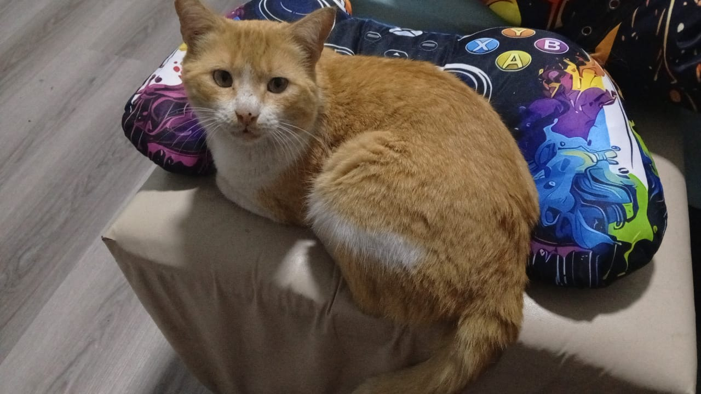
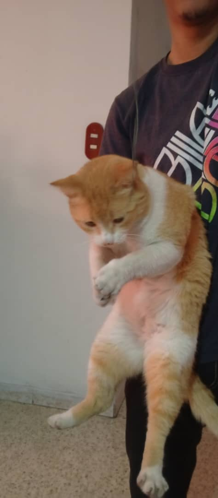
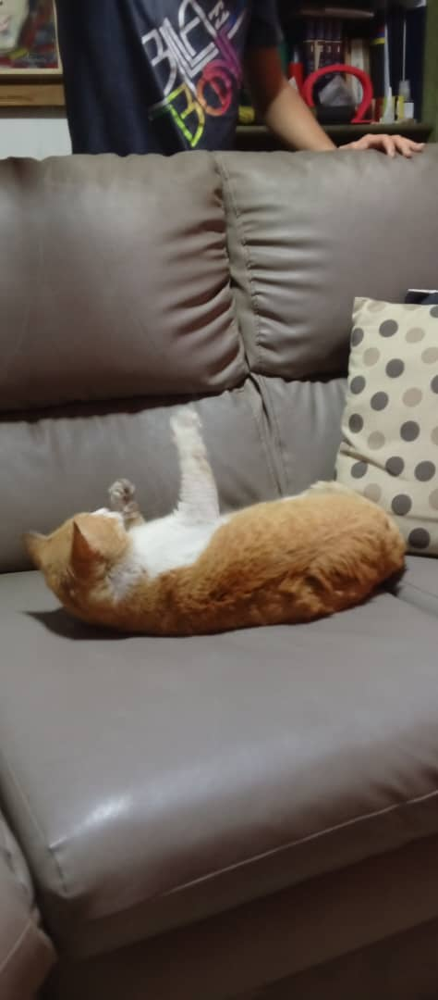
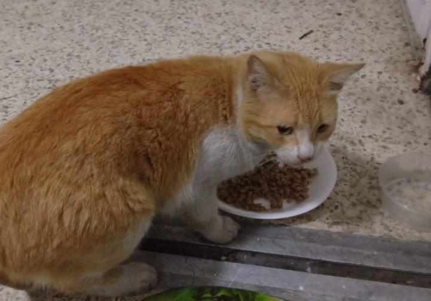
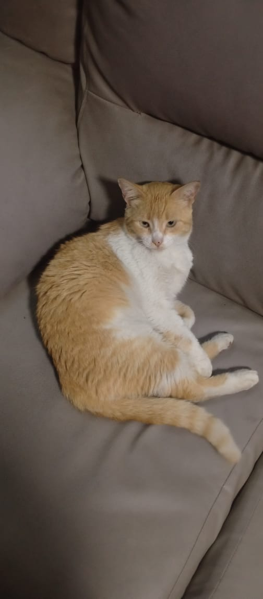

Los animalitos callejeros solo necesitan amor

este es mi gatito, un dia le di de comer porque estaba muy hambriento, me siguó hasta mi hogar, nunca pense que llegaria tan lejos siguiendome, pero vi que no se queria ir de mi puerta, asi que decidi dejarlo entrar a mi hogar para que no pasara la noche con frio, le di comida y se quedo dormido, no pude dejarlo ir asi que temrine adoptandolo.

Los animalitos agradecen una segunda oportunidad con todo su corazón.

Adoptar es un acto de amor que realmente cambia el mundo.

Un amigo fiel que te llenará de alegría cada día.

Cada animalito tiene su propia personalidad especial.
✅ Adoptando en lugar de comprar
✅ Voluntariado en refugios
✅ Donando comida o medicinas
✅ Compartiendo en redes sociales
Cuando adoptas a un animalito de la calle, no solo le das un hogar, le devuelves la esperanza. Ellos no piden mucho: un plato de comida, un lugar donde dormir sin miedo, y alguien que los mire con cariño. Michi fue uno de esos miles que esperaban una oportunidad. Hoy, es el rey de la casa, el que llena de ronroneos cada rincón y de recuerdos de que el amor más puro llega cuando menos lo esperas. La calle los endurece, pero un hogar los transforma. Adoptar es entender que ellos también sienten, también sueñan, también merecen ser felices. Si puedes abrir tu puerta, hazlo. No cambiarás el mundo entero, pero cambiarás TODO el mundo de un animalito.